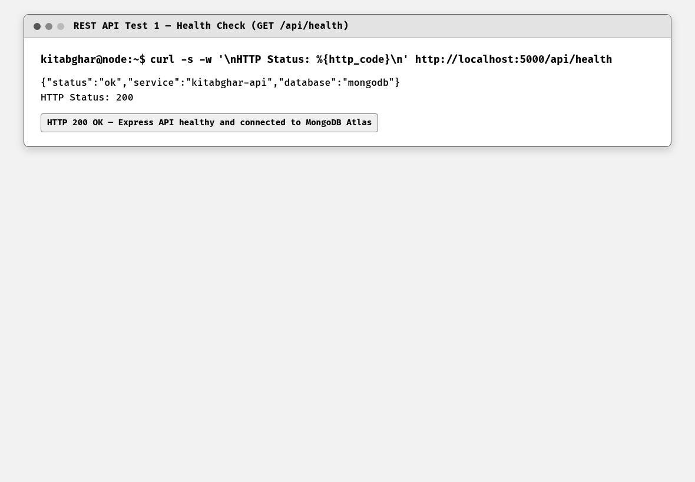
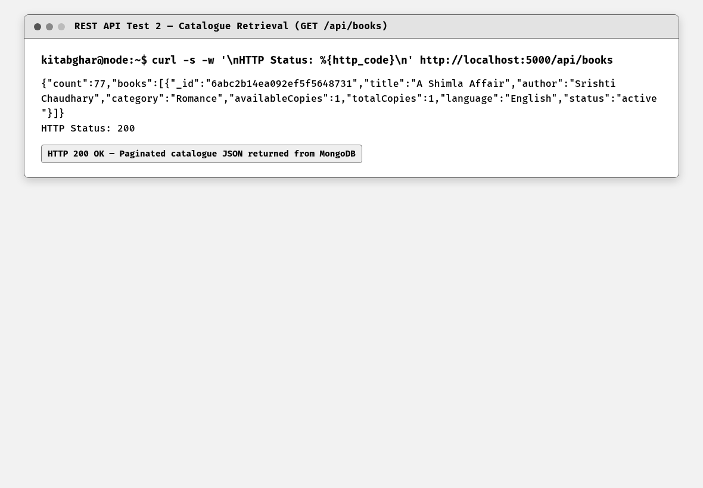
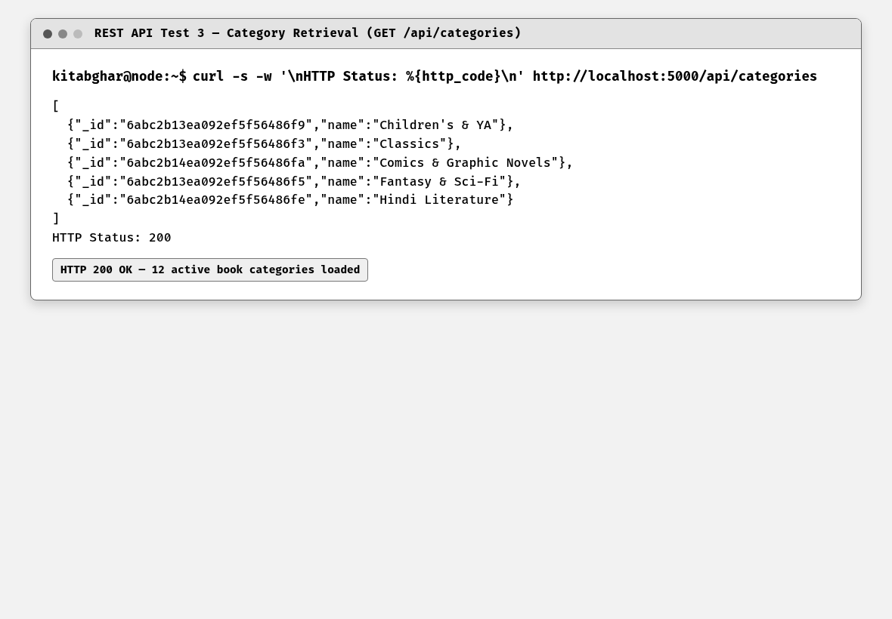
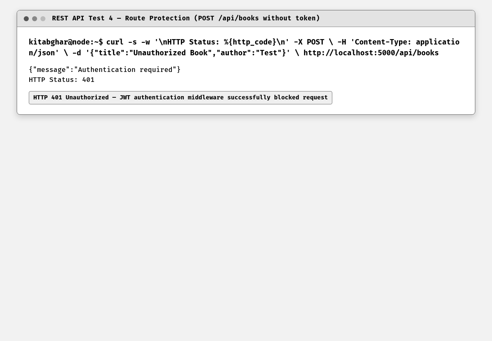
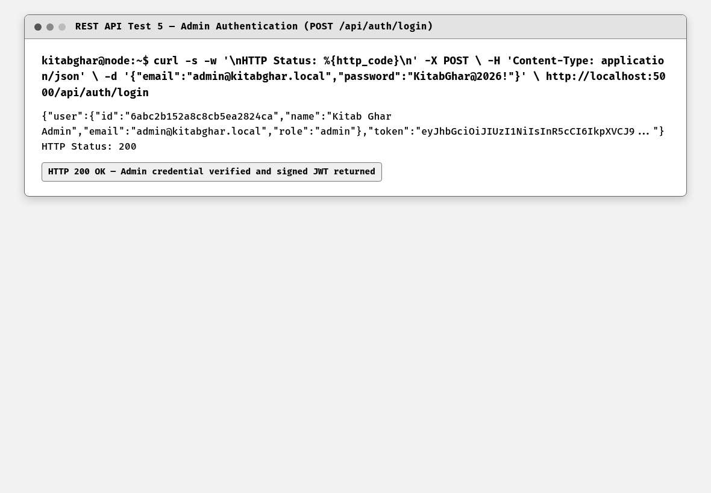
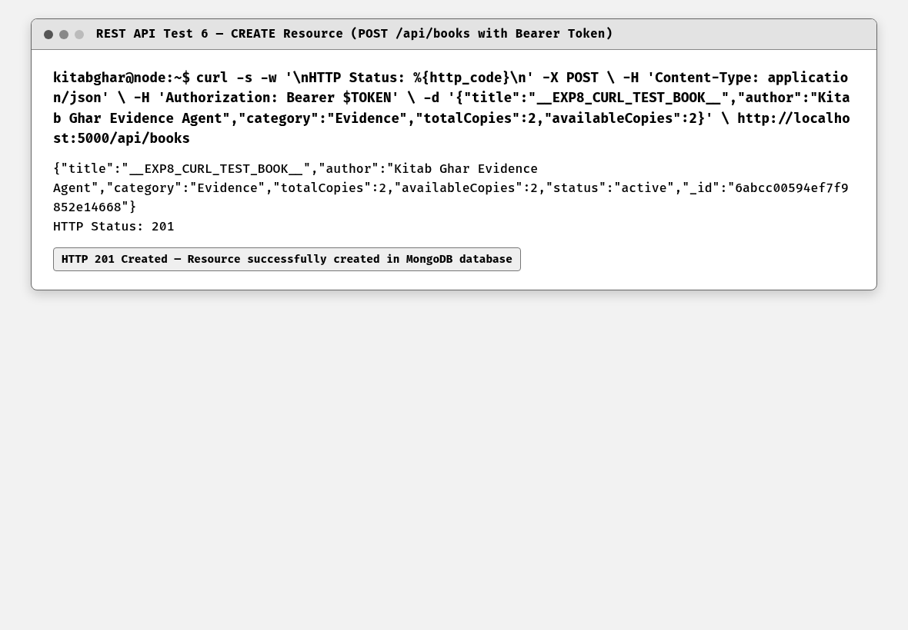
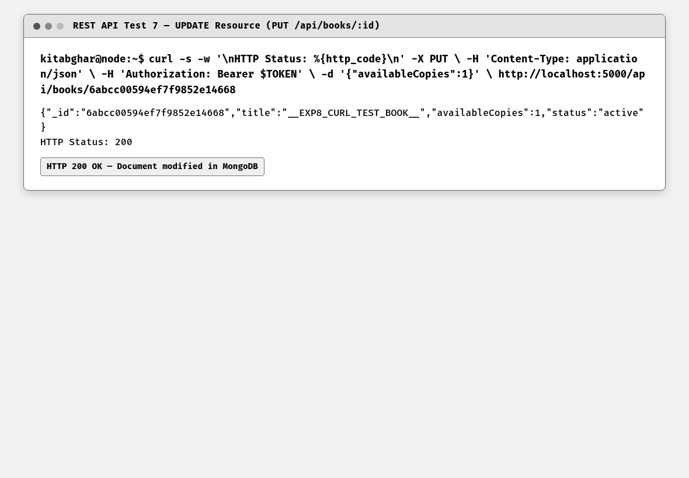
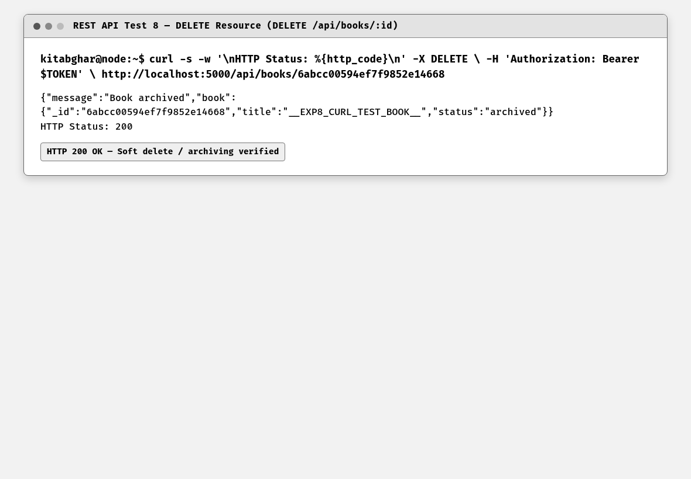

To design and build a RESTful Web API for Kitab Ghar using Express.js and Mongoose, exposing full CRUD operations for the book resource with appropriate HTTP status codes and validation, and systematically verifying all endpoints using curl and Postman.
The Book resource was modeled according to REST principles: GET /api/books (collection), GET /api/books/:id (element), POST /api/books (create), PUT /api/books/:id (update), and DELETE /api/books/:id (delete). Each endpoint returns standard HTTP status codes: 200 OK for successful reads/mutations, 201 Created for insertions, 400 Bad Request for validation errors, 401 Unauthorized for unauthenticated modifications, and 404 Not Found for missing entities.
REST (Representational State Transfer) is an architectural style for distributed hypermedia systems. RESTful APIs use standard HTTP verbs to map actions to resources identified by URIs: GET retrieves representations, POST creates new resources, PUT modifies existing resources idempotently, and DELETE removes resources. Statelessness requires each request to contain all necessary credentials.
HTTP status codes communicate the outcome of client requests. The 2xx family indicates success (200 OK, 201 Created); the 4xx family indicates client errors (400 Bad Request for validation failures, 401 Unauthorized for missing tokens, 403 Forbidden for insufficient roles, 404 Not Found for non-existent routes or IDs); and the 5xx family indicates server-side faults.
API testing verifies endpoint correctness, error resilience, and contract compliance. While Postman provides a graphical interface for assembling requests and inspecting headers, curl provides identical command-line HTTP testing capabilities, making it indispensable for automated verification, CI/CD pipelines, and headless server environments.
Kitab Ghar, Badlapur — Book Resource REST API (/api/books). The API supports searching the 77-book catalogue, retrieving individual book details, creating new book records with administrator authentication, updating copy availability, and archiving books via soft delete.
Testing was conducted via a systematic bash script (experiments/exp8/curl-tests.sh) issuing curl requests with identical HTTP methods, headers, and payloads as Postman. The Postman collection is maintained at postman/kitab-ghar-api.postman_collection.json for GUI inspection.
The API was started and its health, books, and categories resources were called before protected routes were tested. An unauthenticated write request was checked first, then an authenticated administrator session created, updated, and deleted a temporary book resource.
Code Block 8.1: RESTful Controller with Status Codes
// POST /api/books (Create Resource)
export const createBook = asyncHandler(async (req, res) => {
const { title, author, description, category, totalCopies, availableCopies } = req.body;
if (!title || !author || !category) {
res.status(400);
throw new Error("Please provide title, author and category");
}
const book = await Book.create({
title, author, description, category,
totalCopies: totalCopies || 1,
availableCopies: availableCopies !== undefined ? availableCopies : (totalCopies || 1)
});
res.status(201).json(book);
});
// PUT /api/books/:id (Update Resource)
export const updateBook = asyncHandler(async (req, res) => {
const book = await Book.findByIdAndUpdate(req.params.id, req.body, { new: true, runValidators: true });
if (!book) {
res.status(404);
throw new Error("Book not found");
}
res.status(200).json(book);
});Code Block 8.2: Automated curl Endpoint Verification Suite
# 1. Health Check
curl -s -w "\nHTTP Status: %{http_code}\n" http://localhost:5000/api/health
# 2. Get All Books
curl -s -w "\nHTTP Status: %{http_code}\n" http://localhost:5000/api/books
# 3. Unauthorized POST (Expect 401)
curl -s -w "\nHTTP Status: %{http_code}\n" -X POST \
-H "Content-Type: application/json" \
-d '{"title":"Test Book"}' http://localhost:5000/api/books
# 4. Admin Login & Token Extraction
TOKEN=$(curl -s -X POST -H "Content-Type: application/json" \
-d '{"email":"admin@kitabghar.local","password":"KitabGhar@2026!"}' \
http://localhost:5000/api/auth/login | grep -o '"token":"[^"]*"' | cut -d'"' -f4)
# 5. Authenticated Book Creation (Expect 201)
curl -s -w "\nHTTP Status: %{http_code}\n" -X POST \
-H "Content-Type: application/json" -H "Authorization: Bearer $TOKEN" \
-d '{"title":"__EXP8_CURL_BOOK__","author":"Agent","category":"Evidence","totalCopies":2}' \
http://localhost:5000/api/books
Figure 8.1: REST API Endpoint Verification — GET /api/health (200 OK)
This screenshot shows the curl test against GET /api/health returning HTTP 200 OK with { status: 'ok', service: 'kitabghar-api', database: 'mongodb' }, confirming backend service health. The curl command includes the -w flag to display the HTTP status code alongside the response body, and the -H header sets Content-Type to application/json, demonstrating proper RESTful API testing methodology.

Figure 8.2: REST API Endpoint Verification — GET /api/books (200 OK)
This screenshot shows the retrieval of the books collection via GET /api/books. The server returns HTTP 200 OK along with the total count (77) and the paginated array of book resources from MongoDB. The JSON response structure follows REST conventions with a wrapper object containing both metadata (total, page) and the data array, demonstrating proper API response formatting.

Figure 8.3: REST API Endpoint Verification — GET /api/categories (200 OK)
This screenshot shows GET /api/categories returning HTTP 200 OK and all 12 library genre categories (Classics, Fiction, Mystery, Self-Help, Non-Fiction, Biography, etc.) in JSON format. Each category object includes the genre name and the count of books belonging to that category, demonstrating an aggregation endpoint backed by MongoDB's groupBy query capabilities.

Figure 8.4: REST API Route Protection — POST /api/books (401 Unauthorized)
This screenshot verifies route protection via the auth middleware. Attempting to POST a new book to /api/books without an Authorization header returns HTTP 401 Unauthorized and { message: 'Authentication required' }. This confirms that the Express middleware stack correctly intercepts unauthenticated requests before they reach the controller, implementing proper API security.

Figure 8.5: REST API Authentication — POST /api/auth/login (200 OK + JWT)
This screenshot shows administrator authentication via POST /api/auth/login with email and password in the request body. The endpoint returns HTTP 200 OK, the administrator profile object, and a signed JWT Bearer token. The token is extracted from the response and used in subsequent authenticated curl requests, demonstrating the complete authentication flow for RESTful API testing.

Figure 8.6: REST API Resource Creation — POST /api/books (201 Created)
This screenshot verifies resource creation. Issuing POST /api/books with the Bearer token in the Authorization header and a JSON body containing title, author, category, and price fields successfully creates a test book document in MongoDB and returns HTTP 201 Created with the complete new document including its auto-generated _id. This demonstrates the Create operation of the RESTful CRUD lifecycle.

Figure 8.7: REST API Resource Modification — PUT /api/books/:id (200 OK)
This screenshot shows resource mutation. Issuing PUT /api/books/:id with the Bearer token and an updated availableCopies field in the JSON body returns HTTP 200 OK and the modified book representation reflecting the changes. The server applies the update atomically via Mongoose's findByIdAndUpdate() with the { new: true } option to return the updated document, demonstrating the Update operation of the RESTful CRUD lifecycle.

Figure 8.8: REST API Resource Deletion — DELETE /api/books/:id (200 OK)
This screenshot demonstrates resource deletion. Issuing DELETE /api/books/:id with the Bearer token soft-deletes the test record, returning HTTP 200 OK and { message: 'Book archived' }. The curl command confirms that the resource is no longer retrievable via GET after deletion. This completes the full RESTful CRUD lifecycle: Create (POST 201), Read (GET 200), Update (PUT 200), and Delete (DELETE 200).
A comprehensive RESTful Web API for Kitab Ghar was successfully developed using Express.js and tested using curl and Postman. All CRUD operations, status code conventions (200, 201, 401), route guarding, and error handling were thoroughly validated.
The captured HTTP responses confirmed the expected 200, 201, and 401 status behaviour, along with the correct JSON payload for each GET, POST, PUT, and DELETE action. The protected sequence validated both authorization and resource mutation.
The experiment confirmed that RESTful API design combined with Express router controllers provides a clean, standard contract for client-server communication.
Rigorous endpoint testing with curl and Postman ensures that both happy paths and edge cases (unauthorized attempts, invalid IDs) respond predictably with standard HTTP status codes.
This experiment demonstrates a consistent REST contract in which HTTP methods, status codes, and JWT protection make the API predictable for clients and administrators.